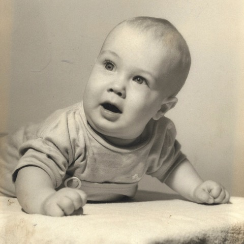
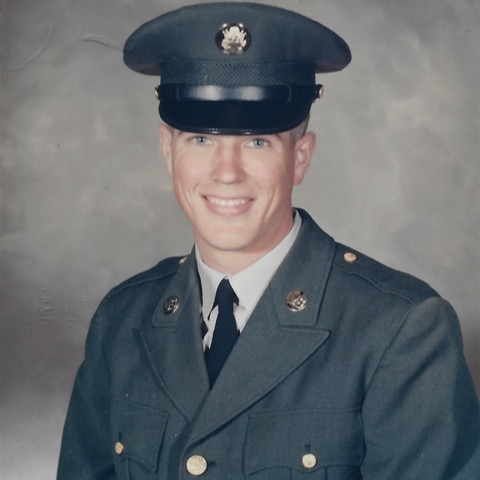
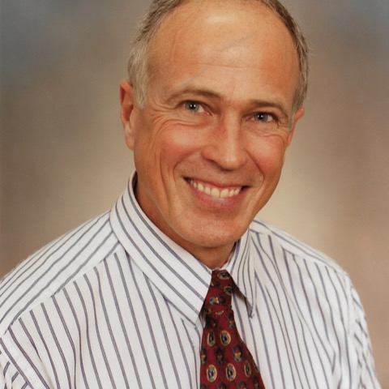

Robert Michael Juneau, age 72, passed away unexpectedly yet peacefully in his sleep next to his loving wife, Susan (née Stepanek), on May 15, 2020. Although gone from us too soon, Bob lived a vibrant and full life.
Bob was born to the late Patrick (1966) and Elaine (née Tuchscherer, 2013) Juneau on February 19, 1948. Shortly after birth, the visiting nurse suggested to his young mother that he didn’t look like a “Bob” and they should call him “Mike.” Elaine took the advice and he was called Mike by all who met him until a college professor began referring to him by his proper first name. It made for many interesting, confusing, and humorous conversations during his life.
Upon graduation from Neenah High School in 1966, Bob fully supported himself and took great pride in being self-made. After serving his country as a medical technician in the Army and marksman on the Fort Sam Houston Rifle Team, Bob graduated magna cum laude from the University of Wisconsin-Oshkosh with a Bachelor of Business Administration in Accounting in 1973. He became a Certified Public Accountant in 1977 and practiced accounting for 43 years. He began his career at Grant Thornton in Appleton, became President of Rolco International in Neenah, and was Controller of Freeman in St. Paul. Bob was extraordinarily organized, neat, practical, and logical—the accounting profession fit him perfectly. Later in life, Bob started a consulting business and never officially retired, enjoying the opportunity to keep his mind sharp.
Mike enjoyed distance running before becoming interested in bodybuilding. He was a successful bodybuilder beginning in 1993 and could often be found at the Neenah-Menasha YMCA. Mike rarely shared photos of his bodybuilding contests, despite being in impeccable physical shape. It was during this time that he met his wife Susan.
Bob and Susan traveled the world together, visiting destinations at all ends of the earth—the only continent they missed was Antarctica. Recently, they celebrated their anniversary with a trip to Costa Rica, where they had honeymooned. They enjoyed watching and playing tennis, and embarked on a journey to visit all the Grand Slams, starting out strongly by attending the opening days of Wimbledon 2019. Bob had a green thumb and, together with Susan, managed a bountiful garden and beautiful yard. He loved to share vegetables with his children and grandchildren. Bob was very engaging in conversation and, being well-read, happily and gracefully discussed a variety of topics. A strong sense of humor, beautiful smile, and disarming charm is how he will be remembered.
Being an exceptional marksman, Bob became an accomplished hunter, and took great care to do this respectfully because of his love for the outdoors. His passion for hunting brought him to many locations, including Canada, New Zealand, and Africa. He and his brother Paul traveled, hunted, and loved sharing stories about growing up in a household of four boys. Bob also cherished outdoor adventure trips with his close friend Terry. Meat from his hunts was often provided to local villages and many mounts were donated to 1000 Islands Environmental Center in Kaukauna.
He was preceded in death by his parents and brother, Jim (2016). Bob will be dearly missed by his wife of 26 years, Susan. He is also survived by his children, Andrew (Erin), Patrick Sr., Jennifer, Katie (Brian) Weber, and Thomas (Deidre) Rippl; his grandchildren, Katelyn, Julius, and Eloise Rippl, Caroline, Fritz, and Calvin Weber, and Patrick Jr., Wyatt, and Gracelynn; his brothers, Peter (Wendy) and Paul; and a wonderful extended family.
Per Bob’s wishes, no funeral service will be held. In lieu of flowers, please spread kindness.


